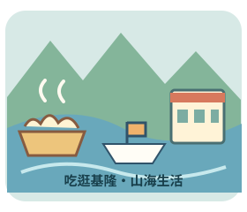

KEELUNG / EAT · SHOP · EXPLORE
基隆探險
吃逛港都，山海生活
從廟口、白天市場到港邊商場，
再走進漁村、湖泊與城市故事。

打開17張地方卡：吃逛、港都與山海手冊
可隨時搜尋、重看，不扣分。介紹是特色線索，不是品牌排行或今日營業保證。
不是只有夜市，也不只有一張港景照
12個任務、四種玩法：走吃逛路線、排城市故事與行程、拼地方名片、安排生活方案。17張地方卡含微風東岸、港好食城、廟口、仁愛市場、孝三路、委託行、伴手禮與山海景點。
基隆有中正、信義、仁愛、中山、安樂、暖暖、七堵七區，地形與生活動線不同。本遊戲不倒數，手冊可重看；作答只留本頁，重新整理清空。
這一輪，基隆多了哪些面貌？
把城市的美好，接回日常
廟口、傳統市場、老街與商場各有節奏；山海風景也連著漁業、礦業、交通和居民生活。吃逛之外，想像自己住在這裡，還要看住家到站牌的路、坡度、學校、托育、醫療與日常採買。
資料查核：2026-11-14，依官方觀光、市府、海科館與交通網站整理。店家、活動、票價、開放區域與班次可能變動，不寫死價格或營業時段。基隆塔官方頁面細項仍有整修備註，請另查最新公告。